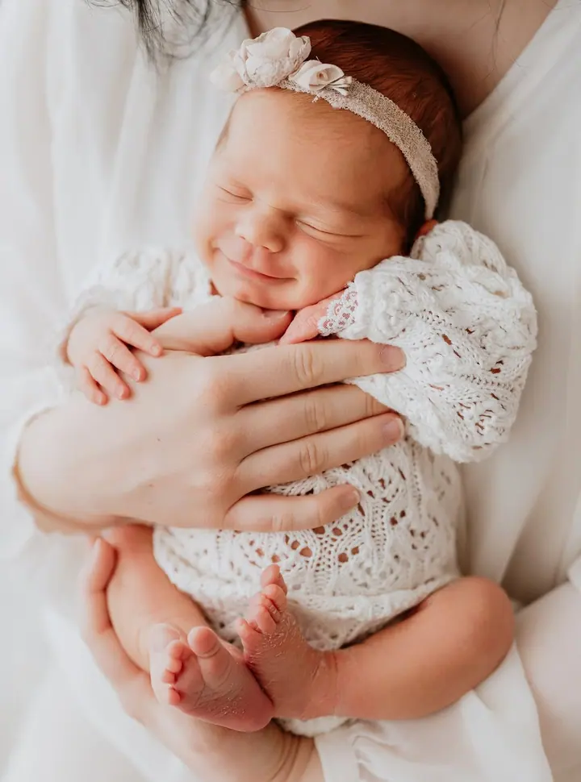
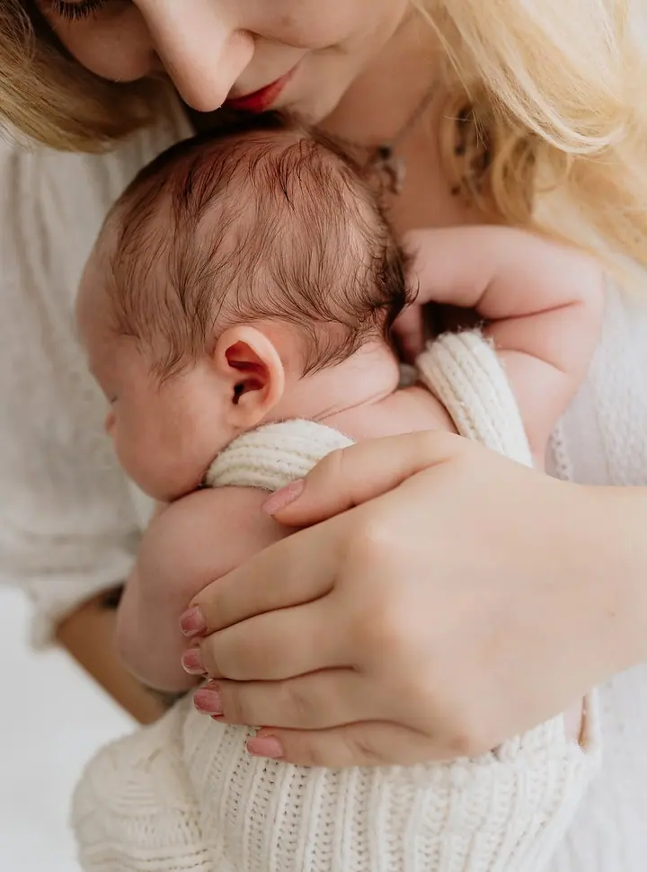

Newborn focení
Novorozená miminka fotím nejčastěji ve věku 6 až 14 dní, v klidu a vždy podle jejich potřeb. Můj styl je světlý, čistý a minimalistický, s minimem rekvizit a nejraději s miminkem v náručí rodičů.

Jmenuji se Dana Macáková a ve svém útulném ateliéru v Syrovátce u Hradce Králové fotím novorozená miminka, maminky v očekávání i celé rodiny. Bezpečí miminka je pro mě n…
Rezervovat termínAhoj, jsem Danny. Profesionálně fotím pro klienty více než 10 let a za tu dobu jsem vyfotila stovky miminek a jejich rodin. Vystudovala jsem grafickou školu a focení je už nějaký ten pátek součástí mého života. Tuhle práci miluju.

Sama jsem máma dvou kluků, a tak dobře vím, jak křehké a intenzivní jsou první dny s miminkem. Proto je pro mě nejdůležitější, aby se u mě cítilo dobře nejen miminko, ale celá rodina. Když je potřeba nakojit, přebalit nebo pochovat, uděláme si pauzu.
Fotím v autorském ateliéru v Syrovátce, kousek od Hradce Králové, Pardubic i Chlumce nad Cidlinou. Zaparkujete přímo u něj, v létě je klimatizovaný, v zimě v něm je teplo a útulno. Oblečky a doplňky mám připravené a za pronájem studia nic navíc neplatíte.
Co fotím
Novorozená miminka fotím nejčastěji ve věku 6 až 14 dní, v klidu a vždy podle jejich potřeb. Můj styl je světlý, čistý a minimalistický, s minimem rekvizit a nejraději s miminkem v náručí rodičů.
Fotím v ateliéru v Syrovátce nebo venku v krásných lokalitách v okolí Hradce Králové. Ideální doba je mezi 28. a 34. týdnem těhotenství, kdy je bříško krásně vidět.
Každý rok pro vás v ateliéru připravuji novou, originální vánoční scénu. Mini focení probíhá od druhé poloviny října.
Starší miminka, první narozeniny, sourozence i celé rodiny fotím v ateliéru nebo venku v přírodě. Děti tam mají prostor k pohybu a mohou být samy sebou.
Postup
Ozvěte se mi ještě před porodem. Termín si zatím zapíšu podle termínu porodu, protože vím, že se miminka nerodí přesně na den.
Až se miminko narodí, pošlete mi zprávu ještě z porodnice. Podle toho naplánujeme přesný termín focení, ideálně do dvou týdnů věku.
Focení se přizpůsobuje miminku. Kojíme, chováme a konejšíme podle potřeby, nikam nespěcháme.
Po focení vám pošlu náhledy fotografií. Vyberete si své favority a ty vám pak upravím.
Otázky
Novorozená miminka fotím nejčastěji ve věku 6 až 14 dní. Jsou maličká, krásně spinkají a dají se schoulit do klubíčka jako u maminky v bříšku.
Nejčastěji fotím maminky mezi 28. a 34. týdnem těhotenství, kdy je bříško krásně vidět a obvykle se ještě cítí dobře.
Nemusíte. V ateliéru mám připravené oblečky, dečky a rekvizity. Pokud máte něco vlastního, co byste chtěli do fotek zapojit, klidně to vezměte s sebou.
Ano, partner i sourozenci jsou vítáni a společné fotky jsou podle mě jedny z nejdůležitějších. Když se partner focení zúčastnit nemůže, ráda nafotím maminku samotnou nebo s dětmi.